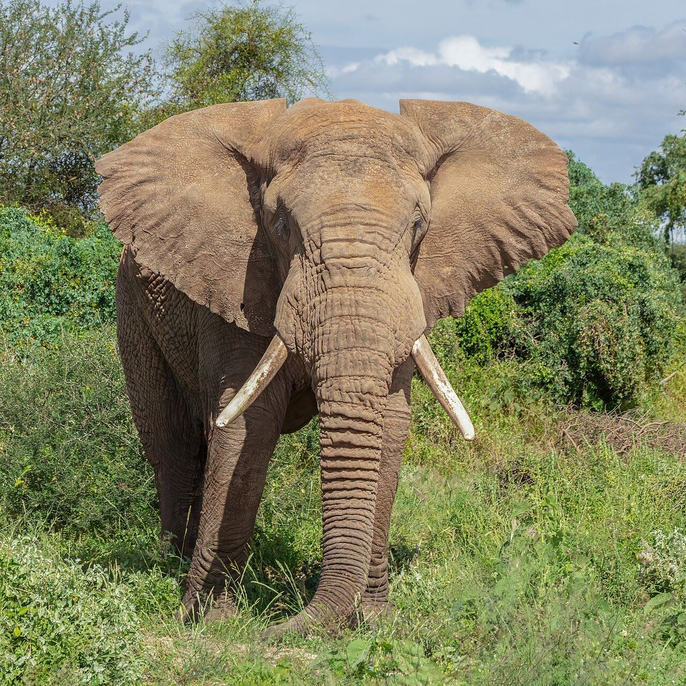

Wat kun jij doen
Je hoeft geen ranger te zijn om verschil te maken
De projecten op deze site laten zien dat herstel werkt als mensen het samen doen. Hier lees je hoe jij kunt meedoen: met je geld, je reis, je boodschappen, je stem en dicht bij huis.
Geef slim
Geld is vaak het verschil tussen een plan en een park dat werkt.
Kies voor werk ter plekke
Geef aan organisaties die lokale rangers, boeren en vissers betalen en laten meebeslissen. Zij weten het beste wat werkt.
Liever vaker een klein bedrag
Een vaste maandelijkse gift helpt projecten om vooruit te plannen, bijvoorbeeld voor salarissen van rangers en leraren.
Stel vragen
Hoe wordt het geld besteed? Hoe worden mensen in de buurt betrokken? Goede organisaties geven daar graag antwoord op.
- Naar de doneerpagina
Reis bewust
Toerisme kan natuur waardevol maken voor de mensen die ernaast wonen, als het goed gebeurt.
Kies lodges die inkomsten delen
Vraag of je lodge of reisorganisatie samenwerkt met de gemeenschap, zoals de conservancies in Namibië of de dorpen rond Bwindi.
Huur lokale gidsen in
Zij kennen het land het best, en je geld blijft in de regio.
Houd afstand
Geen selfies met wilde dieren, geen "aaiboerderijen" met leeuwenwelpjes. Bij gorilla's: blijf thuis als je verkouden bent.
Koop bewust
Wat je in je winkelmand legt, heeft invloed op natuur ver weg.
Nooit wildproducten
Geen ivoor, neushoornhoorn, schubben van schubdieren of souvenirs van wilde dieren. Ook niet "antiek" of "legaal" op vakantie.
Vis en zeevruchten met een keurmerk
Kies voor duurzame visserij, zodat kustgemeenschappen zoals in Madagaskar niet worden weggeconcurreerd.
Koffie, thee en cacao met een verhaal
Producten van coöperaties naast natuurgebieden, zoals bij Gorongosa en Bwindi, geven boeren een reden om het bos te beschermen.
Vertel het verder
Hoop is besmettelijk. Mensen doen eerder mee als ze zien dat iets werkt.
Deel een verhaal dat je raakt
Stuur een project van deze site naar een vriend, collega of familielid.
Praat mee
Stel je vraag of deel je ervaring in het gesprek met andere bezoekers.
Laat Afrikaanse stemmen horen
Volg en deel rangers, onderzoekers en organisaties uit Afrika zelf, niet alleen westerse beroemdheden.
Praat er met kinderen over
Zonder angst, maar met nieuwsgierigheid. Op Wildkracht Rangers ontdekken kinderen van 6 tot 12 tien Afrikaanse dieren.
Begin dicht bij huis
Wat in Afrika werkt, werkt ook hier: geef de natuur ruimte en laat mensen meedoen.
Maak je tuin of balkon wilder
Minder tegels, meer inheemse planten, een egelgat in de schutting. Laat een boompje gewoon opgroeien, zoals de boeren in Niger.
Doe mee aan een telling
Tuinvogeltellingen en insectentellingen helpen onderzoekers, precies zoals de tellingen in Gorongosa.
Word vrijwilliger
Bij een natuurorganisatie in je buurt help je met beheer, educatie of tellen.

Klaar om mee te doen?
Geef aan het Wildkrachtfonds of kies zelf een project.
DoneerDit is een conceptwebsite: doneren is een schets en er wordt niets afgeschreven.
Olifant in Amboseli, Kenia · Foto: Diego Delso, CC BY-SA 4.0